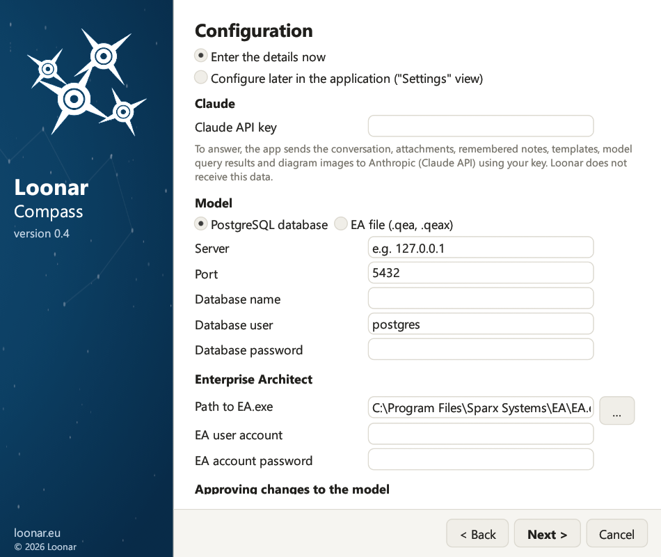

Instrukcja instalacji
2. Wymagania
- Model jest plikiem projektu EA .qea lub .qeax albo jest w bazie danych PostgreSQL. Starsze formaty plików (.eap, .eapx, .feap) oraz inne bazy nie są obsługiwane; plik .eap/.eapx Enterprise Architect przekonwertuje do .qea transferem projektu (Settings → Model → Transfer → Full Project Transfer).
- Model w bazie ma włączone zabezpieczenia użytkowników (w Enterprise Architect: Settings → Security → Enable Security), w trybie „Require User Lock to Edit”. W pliku modelu zabezpieczenia są opcjonalne: bez nich asystent nie potrzebuje konta EA. Aplikacja loguje się do modelu na konto asystenta i na czas zapisu zakłada blokady. Gdy zabezpieczenia są wyłączone, blokady są pomijane, a taka konfiguracja nie jest obsługiwana.
- W modelu z włączonymi zabezpieczeniami istnieje konto użytkownika dla asystenta (Settings → Security → Users), z hasłem i z uprawnieniami do edycji. Nazwa konta jest dowolna, na przykład
claudealboasystent. Login i hasło tego konta podajesz w ustawieniach aplikacji.
| Co | Szczegóły |
|---|---|
| System | Windows 10 lub Windows 11 (64-bitowy) |
| Enterprise Architect | Zainstalowany na tym samym komputerze, z ważną licencją. Aplikacja uruchamia go w tle; w tym czasie zajmuje on jedno miejsce w licencji. |
| Model EA | Plik projektu EA .qea lub .qeax (wystarczy jego ścieżka) albo repozytorium w bazie PostgreSQL z włączonymi zabezpieczeniami użytkowników (potrzebne są: serwer, port, nazwa bazy oraz konto i hasło do bazy, hasło bez średnika; tym kontem asystent czyta model, a Enterprise Architect zapisuje zmiany). Plik .qea jest przeznaczony dla jednej osoby, a .qeax dla małego zespołu, który współdzieli plik. |
| Konto użytkownika modelu | Dla modelu w bazie albo pliku modelu z włączonymi zabezpieczeniami: login i hasło konta asystenta w modelu EA. Najlepiej osobne konto tylko dla asystenta, żeby jego zmiany i blokady było widać osobno i żeby nie kolidowały z Twoimi. |
| Klucz API Claude | Klucz z konsoli Anthropic (Anthropic Console). |
| Internet | Połączenie HTTPS z api.anthropic.com, także przez proxy z ustawień internetowych Windows (rozdział 16). |
| Uprawnienia administratora | Niepotrzebne przy instalacji „Tylko dla mnie”. Wymagane tylko przy instalacji dla wszystkich użytkowników komputera (rozdział 3). |
| Confluence (opcjonalnie) | Cloud albo Data Center, tylko do publikowania stron przez asystenta: adres, token i klucz przestrzeni (rozdział 11). Bez tego strony też powstają, a kod wklejasz sam. |
| Miro (opcjonalnie) | Tylko do wysyłania diagramów na tablicę Miro: token dostępu aplikacji Miro (rozdział 10). |
| Program pocztowy (opcjonalnie) | Program pocztowy ustawiony w Windows jako domyślny, na przykład Outlook: do zgłaszania błędów i zapisu na informacje o nowych wydaniach. |
3. Instalacja
Uruchom plik LoonarCompass-Setup-0.6.exe. Kreator prowadzi przez kolejne strony przyciskami Dalej i Wstecz. Uprawnień administratora nie potrzebujesz, chyba że instalujesz aplikację dla wszystkich użytkowników komputera.

- Język. Polski, angielski, niemiecki albo francuski. Przy nowej instalacji zaznaczony jest angielski, a przy aktualizacji język zapisany w Twoich ustawieniach. Wybrany język dotyczy kreatora, aplikacji, odpowiedzi asystenta i domyślnych szablonów dokumentów; później zmienisz go w ustawieniach (rozdział 5).
- Powitanie. Warunki konieczne i lista rzeczy, które warto przygotować przed instalacją.
- Co nowego. Przy aktualizacji: zmiany od zainstalowanej wersji. Przy nowej instalacji: najważniejsze zmiany w bieżącej wersji.
- Umowa licencyjna. Zaznacz „Akceptuję warunki umowy licencyjnej”.
- Folder docelowy. Rodzaj instalacji (opisany niżej), folder programu i skróty: w menu Start (aplikacja, instrukcja użytkownika, odinstalowanie) i na pulpicie.
- Konfiguracja. Wybierz „Podam dane teraz” albo „Skonfiguruję później w aplikacji (widok »Ustawienia«)”. Od razu możesz podać klucz API Claude (pod polem jest informacja, co trafia do Anthropic), model (bazę PostgreSQL: serwer, port, nazwa bazy, konto i hasło do bazy, albo plik EA: ścieżka do pliku .qea/.qeax, którą wybierzesz przyciskiem …), ścieżkę do
EA.exe(przycisk … otwiera wybór pliku), konto i hasło użytkownika EA oraz tryb zatwierdzania zmian. Puste pole hasła lub klucza zostawia wartość zapisaną wcześniej. - Gotowy do instalacji. Podsumowanie wyborów. Kliknij Instaluj; pasek postępu pokazuje procent i bieżący krok.
- Zakończenie. Zaznaczona opcja „Uruchom Loonar Compass” otwiera aplikację po kliknięciu Zakończ.

Rodzaj instalacji
Na stronie „Folder docelowy” wybierasz, dla kogo instalujesz aplikację:
- „Tylko dla mnie (zalecane, bez uprawnień administratora)”: program trafia do folderu
%LOCALAPPDATA%\Programs\Loonar Compass. Windows nie prosi o uprawnienia administratora. - „Dla wszystkich użytkowników tego komputera (wymaga uprawnień administratora)”: program trafia do folderu
%ProgramFiles%\Loonar Compass, w którym pliki mogą zmieniać tylko administratorzy. Windows prosi o uprawnienia administratora dopiero po kliknięciu Instaluj. Jeśli ich nie przyznasz, nic nie zostanie zainstalowane.
Ustawienia i hasła zawsze trafiają do profilu użytkownika, który uruchomił kreator, także wtedy, gdy uprawnienia administratora potwierdza inna osoba. Przy instalacji dla wszystkich użytkowników każdy z nich ma własne ustawienia, rozmowy i hasła.

Aktualizacja z wcześniejszej wersji
Wcześniejsze wersje aplikacji nosiły nazwę Loonar EA Assistant: Loonar Compass automatycznie przejmuje ich ustawienia, rozmowy, pamięć asystenta, szablony i hasła.
- Wcześniejsza wersja zainstalowana tylko dla Ciebie jest usuwana podczas instalacji (pliki programu, skróty i wpis w ustawieniach Windows); Twoje dane zostają.
- Wcześniejszą wersję zainstalowaną dla wszystkich użytkowników kreator pokazuje na stronie „Gotowy do instalacji”. Usuniesz ją przyciskiem Usuń starą wersję (uprawnienia administratora) albo później w ustawieniach Windows (Aplikacje). Twoje ustawienia i rozmowy zostają.
- Na pierwszej stronie kreator zaznacza język zapisany w Twoich ustawieniach (ustawienia bez zapisanego języka oznaczają polski), a gdy ustawień nie ma, angielski. Sprawdź ten wybór, zanim klikniesz Dalej.
- Zmiana języka w kreatorze nie tłumaczy pamięci asystenta ani szablonów. Jeśli chcesz je przenieść na nowy język, zostaw w kreatorze dotychczasowy język, a po instalacji zmień go w karcie 4 ustawień (rozdział 5).
- Hasło do bazy, które starsze wersje trzymały w pliku ustawień, trafia do Menedżera poświadczeń Windows, a pliki z polskimi nazwami w folderze danych dostają nazwy angielskie (na przykład
audit_log.jsonlitemplates).
19. Aktualizacja i odinstalowanie
Aktualizacja. Zamknij aplikację i uruchom instalator nowszej wersji. Kreator pokaże stronę „Co nowego” ze zmianami od zainstalowanej wersji, zaproponuje ten sam rodzaj instalacji i folder oraz zachowa Twoje ustawienia, hasła, historię rozmów, załączniki, pamięć, szablony i dziennik zmian. Aktualizację z wersji o dawnej nazwie opisuje rozdział 3.
Zamykanie aplikacji. Zamknięcie okna zamyka też sesję Enterprise Architect uruchomioną w tle przez aplikację, więc licencja EA jest od razu zwalniana.
Odinstalowanie. Zamknij aplikację. Użyj skrótu „Odinstaluj Loonar Compass” w menu Start albo pozycji „Loonar Compass” w ustawieniach Windows (Aplikacje → Zainstalowane aplikacje). Przy instalacji dla wszystkich użytkowników Windows poprosi o uprawnienia administratora. Program odinstalowujący usuwa pliki programu, skróty i wpis w systemie, pokazując postęp na pasku. Twoje dane zostają na komputerze, chyba że zaznaczysz:
- „Usuń ustawienia, rozmowy, załączniki, pamięć asystenta, szablony dokumentów i dziennik zmian”: usuwa cały folder
%APPDATA%\Loonar Compass, - „Usuń klucz API, hasła i tokeny z Menedżera poświadczeń”: usuwa wszystkie sekrety aplikacji, także hasło do bazy i token Confluence.
Usuwane są tylko dane użytkownika, który uruchomił odinstalowanie; dane innych użytkowników zostają w ich profilach.